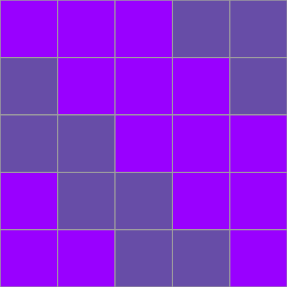

CPSC 203, 2025 W1
January 1, 2024
Creating blocks is an arduous task. We’d like a way to make new blocks out of old ones! How many different kinds of blocks are found in this image? How are they related to one another?
We can use that one block to create a surprising pattern!
TODOS:
Write flippy member functions
Use them to create patterns
| Position | Row | Column |
|---|---|---|
Suppose we want to perform a vertical reflection of a block. Sketch the resulting block. Describe how you would accomplish the flipped block, in terms of the block representation in our code (list of rows).
Review the code we’ve written and make 3 observations:
Line ___: ____________________________________
Line ___: ____________________________________
Line ___: ____________________________________
Suppose we want to create a new block which is just the horizontal reflection of a given block. Sketch the new block. Describe how you would accomplish the flipped block, in terms of the block representation in our code.

Review the code we’ve written and make 3 observations:
Line ___: ____________________________________
Line ___: ____________________________________
Line ___: ____________________________________
Suppose we want to create a new block which is a 180° rotation of a given block. Sketch the new block. Describe how you would accomplish the flipped block.
Review the code we’ve written and make 3 observations:
Line ___: ____________________________________
Line ___: ____________________________________
Line ___: ____________________________________
Great resource on the Python @dataclass decorator: https://realpython.com/python-data-classes/
Write a member function whose purpose is to change the color of a handcraft. What’s a reasonable name for your new function? In which class should the function live? How can you test your code?
Write a member function called invert() that changes knits to purls and purls to knits. We expect to use this function on an object of type hc.
Write a block member function that flips a block around its diagonal.
45:00
05:00
You can choose the active interpreter by clicking on the right side of the status bar at the bottom of VS Code.
Open a new terminal by selecting Terminal > New Terminal from the menu.
Install the package pandas using conda with the command conda install -c conda-forge pandas.